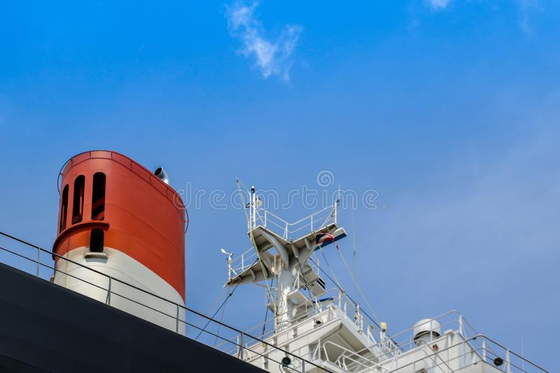

The funnel releases exhaust gases into the atmosphere from the engine exhaust room of the ship.
It has a similar function to chimneys in factories.
Nowadays, extra care has been taken in discharging shoot from the funnel to preserve the atmosphere from pollution. These funnels are never installed straight but inclined at a certain angle toward the aft so that the flue gases will not cause hindrance to the deck and navigation bridge.
